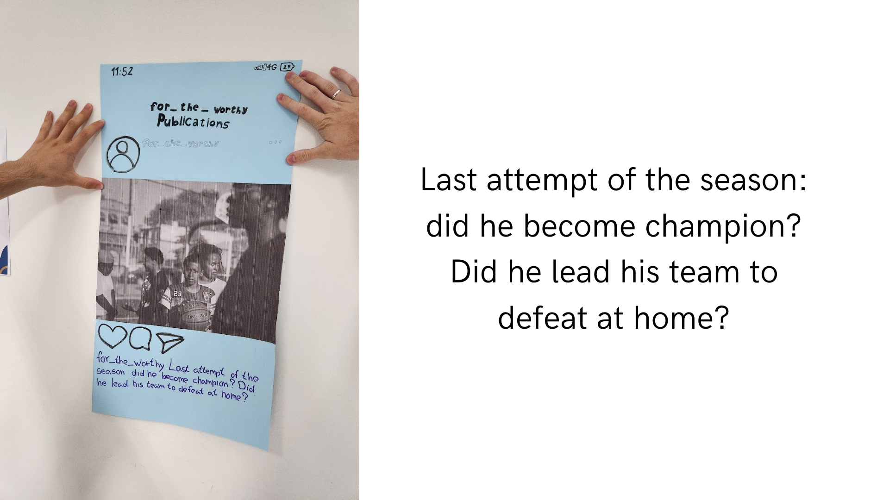

Atividades Linguagens:
Primeiro Trimestre
Revista Literária(Em Construção)

O objetivo da atividade era ler os 2 livros (Torto Arado e Velhos) e fazer uma revista literária com base neles.
Link Da Atividade
Simple Past: Verb to be , Regular and Irregular Verbs - Post com minicontos em inglês

Criamos um miniconto e fizemos um cartaz simulando uma página do Instagram, colocando a legenda no Simple Past.
"Eu não gostei muito da atividade, pois não sou muito bom com trabalhos manuais, porém foi legal aprender um pouco mais sobre o simple past."
Competências e habilidades: H11 H25 H10 H24
Link Da Atividade
Atividade Pré-modernismo
Fizemos uma apresentação sobre o 'Pré-modernismo', e nos foi dada uma obra onde tínhamos que fazer uma biografia sobre o escritor e falar a respeito de sua obra.
"Gostei muito dessa atividade, foi encantador fazer uma biografia sobre Graça Aranha,
foi interessante aprender sobre a história dele e como ele foi importante para a literatura no Brasil."
Competências e habilidades: C3 H15 H16